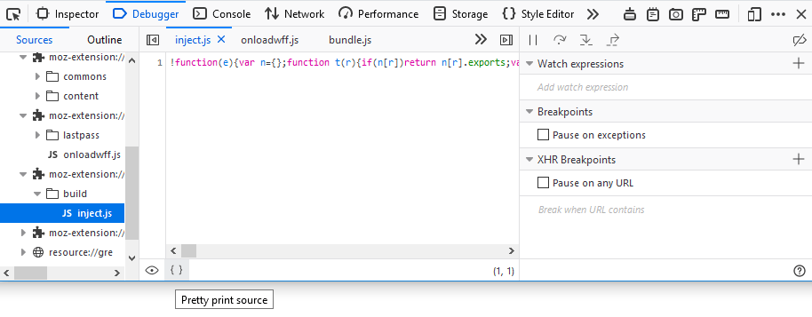
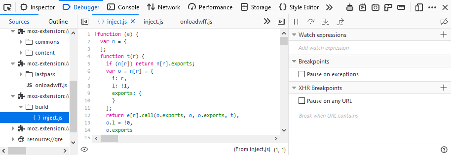

To prettify a minified file, click the Pretty print source icon () at the bottom of the source pane. The debugger formats the source and displays it as a new file with a name like: "{ } [original-name]".

After you click the icon, the source code looks like this:

The Pretty print source icon is available only if the source file is minified (i.e., not an original file), and is not already "prettified".
Note: if you want to prettify some inline JavaScript code, just double click the code in the inspector pane.